| 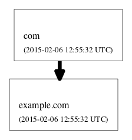 | Thick lines between zones denote
delegations of namespace from one zone to another, as
indicated by the presence of NS (name server) resource records (RRs)
for the delegated namespace. In this example, the black, solid
line indicates a standard, insecure delegation (i.e.,
sans DNSSEC). Other possible delegation statuses are described in the
following entries. |
 | If the designated name servers for a
zone cannot not be properly resolved or if the servers do not properly
respond to queries, then the delegation is considered
lame and is represented by a dashed, yellow
line. |
| 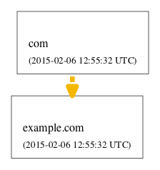 | If the delegation is
incomplete, as indicated by the presence of NS records
in the zone itself but not in its parent zone, then the delegation is
represented by a dashed, yellow line. |
| 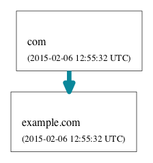 | If the delegation is
secure by DNSSEC standards, then the delegation
is represented by a solid, blue line. |
| 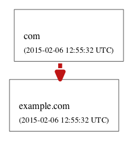 | If the delegation is
bogus by DNSSEC standards, then the delegation
is represented by a dashed, red line. |
| 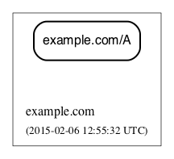 | Resource record sets
(RRsets) returned in the response (usually in the answer
section) are represented as rectangular nodes with rounded corners.
Among the most common record types are SOA (start of authority), A
(IPv4 address), AAAA (IPv6 address), MX (mail exchange), and CNAME
(canonical name). RRsets that are specific to DNSSEC, such as the
DNSKEY, DS, RRSIG, NSEC and
NSEC3 RR types, are represented as other node types, as specified
elsewhere in this guide. |
| 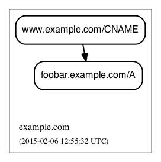 | Aliases resulting from
CNAME RRs are represented by a black edge from one RRset (with the
alias name) to another (with the canonical
name). |
| 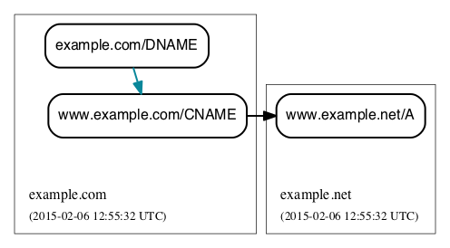 | A DNAME RR is used to alias an entire
namespace into another. DNAME responses include synthesized CNAME RRs
for the aliasing directed by the DNAME RR. DNAME records are
shown in DNSViz with their respective CNAME records. A solid, blue
line between DNAME node and CNAME node indicates that the DNAME
expansion was valid. |
 | A solid, red line between DNAME node
and CNAME node indicates that the DNAME expansion was
invalid. |
| 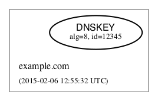 | DNSKEY RRs
include public key and meta information to enable resolvers to validate
signatures made by the corresponding private keys. In DNSViz,
each DNSKEY RR is represented as an elliptical node in the zone
to which it belongs. The DNSKEY RR for the example.com zone has algorithm
8 (RSA/SHA-256) and key tag 12345, both of are used to
identify the DNSKEY. Each DNSKEY node is decorated based on the
attributes of the corresponding DNSKEY RR, as described in the
following entries. |
| 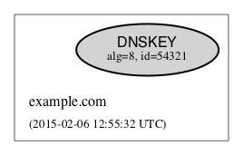 | A gray fill indicates that the
Secure Entry Point (SEP) bit is set in the
flags field of the DNSKEY RR. This bit is
typically used to designate a DNSKEY for usage as a key signing
key (KSK), a DNSKEY that is used to sign the DNSKEY RRset of
a zone, providing a secure entry point into a zone via DS RRs or a
trust anchor at the resolver. |
| 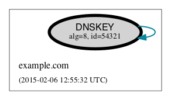 | A thick border indicates
that the revoke bit is set in the
flags field of the DNSKEY RR. Resolvers which
implement the trust anchor rollover procedures documented in RFC 5011
recognize the revoke bit as a signal that the DNSKEY should no longer
be used as a trust anchor by the resolver. For a DNSKEY to be properly
revoked, it must also be self-signing (i.e., used to sign the DNSKEY
RRset), which proves that the revocation was made by a party that has
access to the private key. |
| 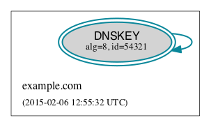 | A double border
indicates that the DNSKEY has been designated as a trust
anchor. A trust anchor must be self-signing (i.e., used
to sign the DNSKEY RRset). |
| 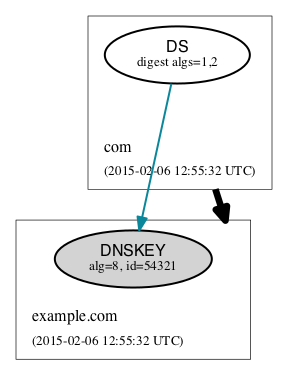
| DS (delegation signer) RRs exist
in the parent of a signed zone to establish a SEP into the zone. Each
DS RR specifies an algorithm and key tag corresponding to a DNSKEY RR
in the signed zone and includes a cryptographic hash of that DNSKEY
RR. In DNSViz DS RRs with the same DNSKEY algorithm and key tag
are typically displayed as a single node since they usually correspond
to the same DNSKEY RR with different digest algorithms. The DS for
example.com has algorithm 8 and key tag
12345, and maps to the corresponding DNSKEY RR with digest algorithms 1
(SHA1) and 2 (SHA-256). In this example, the blue color of the
arrow pointing from DS to DNSKEY indicates that the digest contained in
each of the DS RRs is valid, and corresponds to an existing DNSKEY in
example.com. However, other circumstances
may exist, which are shown in the following entries. |
| 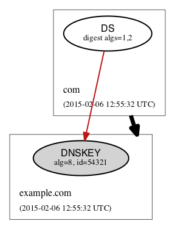 | A solid red line from DS to
DNSKEY indicates that a DNSKEY exists matching the algorithm and key
tag of the DS RR, but the digest of the DNSKEY in the DS RR
does not match. |
| 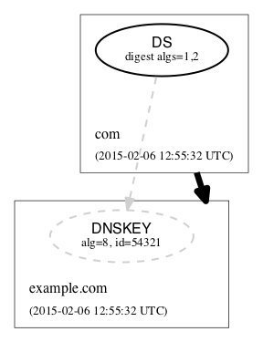 | A dashed gray line from
DS to a DNSKEY with a dashed gray border indicates that no
DNSKEY matching the algorithm and key tag of the DS RR
exists in the child zone. Extraneous DS RRs in a parent zone do
not, in and of themselves, constitute an error. For example, sometimes
they are deliberately pre-published before their corresponding DNSKEYs,
as part of a key rollover. However, for every DNSSEC
algorithm in the DS RRset for the child zone, a
matching DNSKEY must be used to sign the DNSKEY RRset in the child
zone, as per RFC 4035. |
| 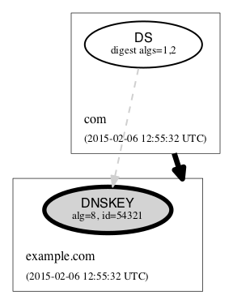 | A
special case of a DS with no matching DNSKEY is when the DS
matched a DNSKEY prior to its revocation, but the
ramifications are the same as if it didn't match any DNSKEY. The line
is simply drawn to help identify the cause of the otherwise
non-existent DNSKEY. In the example at the left the key tag of
the DS records isn't actually 54321; rather, 54321 is the new key tag
resulting from having set the revoke bit in the DNSKEY
RR. |
| 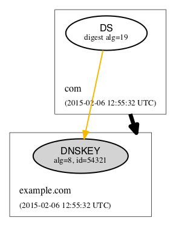 | When the algorithm
and key tag of a DS RR match those of a DNSKEY RR, but the
digest algorithm is unknown or unsupported, then the line
between DS and DNSKEY is yellow. In the example at the left digest
algorithm 19 is unknown. |
| 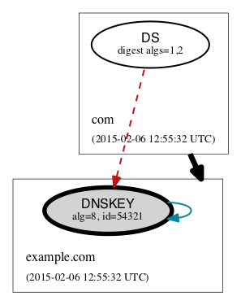 | When the use of a DS
corresponding to a DNSKEY is invalid, independent of the
correctness of its digest, the line between DS and DNSKEY is red and
dashed. An example scenario is when the DNSKEY has the revoke bit set,
which is disallowed by RFC 5011. |
| 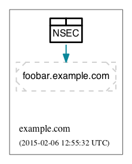
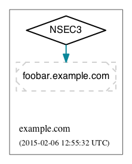 |
NSEC and NSEC3 RRs are
used within DNSSEC to prove the legitimacy of a negative response
(i.e., NXDOMAIN or NO DATA) using authenticated denial of
existence or hashed authenticated denial of
existence, respectively. In DNSViz the NSEC or NSEC3
RR(s) returned by a server to authenticate a negative response are
represented by a rectangular node with several compartments. The
bottom compartment is labeled with either NSEC or NSEC3, depending on
the type of record. Each compartment on the top row represents an
NSEC or NSEC3 record in the set--there will be between one and
three.
An edge extends from the NSEC or NSEC3 node to the
corresponding negative response, as in the figure to the left. If the
edge is solid blue, then the NSEC or NSEC3 RRs returned prove the
validity of the negative response. |
| 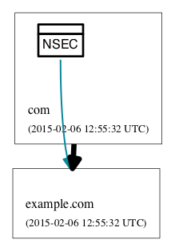 | A special case of NSEC/NSEC3 RRs is
that in which they serve to prove the non-existence of Delegation
Signer (DS) records. The proof of absence of DS records constitutes an
insecure delegation, in which any trust at the parent
zone does not propagate to the child zone. The NSEC/NSEC3 proof
involving DS records is graphically represented with an edge from the
NSEC/NSEC3 node to the box representing the child zone. |
| 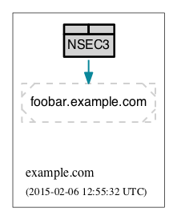 | The opt-out flag is set
in NSEC3 RRs to indicate that their presence is only sufficient to
prove insecure delegations (i.e., lack of DS records) and nothing more.
Thus, a name error (NXDOMAIN) response, for example, cannot be securely
proven when the NSEC3 uses opt-out. NSEC3 records with the
opt-out flag set are colored with a gray background. |
| 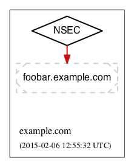 | A solid
red edge from the NSEC or NSEC3 node to the negative response indicates
that the NSEC or NSEC3 RRs included in in the response do not prove the
validity of the negative response. |
| 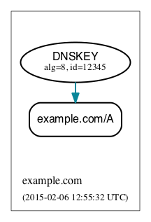 | Each RRSIG RR contains
the cryptographic signature made by a DNSKEY over an RRset. Using the
DNSKEY with the same algorithm and key tag as the RRSIG, the RRset
which was signed, and the RRSIG itself, a resolver may determine the
correctness of the signature and authenticate the RRset. In
DNSViz RRSIGs are represented as directed edges from the DNSKEY that
made the signature to the RRset that was signed. The edges in the
example denote RRSIGs made by the example.com DNSKEY with algorithm 8 and key tag
12345, which cover the example.com/A RRset. |
| 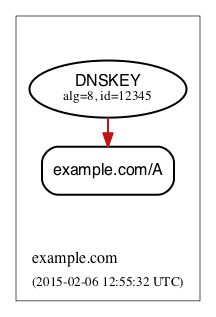 | A solid red edge
indicates an RRSIG in which the cryptographic signature is
invalid. |
| 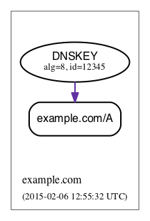 | A solid purple edge
indicates that an RRSIG is invalid because it is outside its
validity period, as defined by the
inception and expiration date fields
in the RRSIG RR. |
| 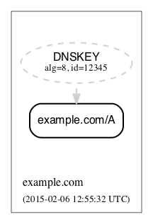 | A dashed gray line stemming from a DNSKEY
with a dashed gray border indicates that no DNSKEY matching the
algorithm and key tag of the RRSIG RR could be found in the
DNSKEY RRset (or the DNSKEY RRset could not be
retrieved). Extraneous RRSIG RRs do not, in and of themselves,
constitute an error. For example, sometimes they are deliberately
pre-published before their corresponding DNSKEYs, as part of an
algorithm rollover. However, every RRset must be covered by RRSIGs for
every algorithm in the DNSKEY RRset, as per RFC
4035. |
| 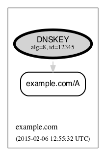 | A special case of an RRSIG with no
matching DNSKEY is when the RRSIG matched a DNSKEY prior to its
revocation, but the ramifications are the same as if it
didn't match any DNSKEY. The line is simply drawn to help identify the
cause of the otherwise non-existent DNSKEY. In the example at the
left the key tag of the RRSIG RR isn't actually 12345; rather, 12345 is
the new key tag resulting from having set the revoke bit in the DNSKEY
RR. |
| 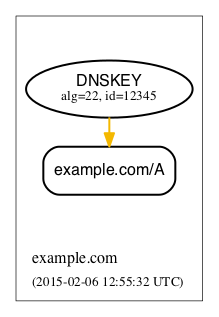 | When the algorithm and key tag of an RRSIG RR
match those of a DNSKEY RR, but the cryptographic algorithm
associated with the RRSIG is unknown or unsupported, then
the line stemming from the DNSKEY is yellow. In the example at the
left algorithm 22 is unknown. |
| 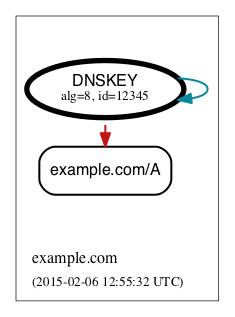 | When an RRSIG is
invalid, independent of the correctness of its temporal
validity period and its cryptographic signature, the line stemming from
the DNSKEY is red and dashed. Example scenarios might be when the
DNSKEY has the revoke bit set or when the signer field
in the RRSIG RR does not match the name of the zone apex. Such
scenarios are disallowed by RFCs 5011 and 4035,
respectively. |
| 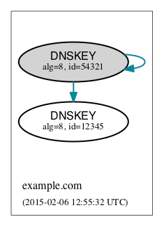 | Just like other
RRsets, a DNSKEY RRset is signed as an RRset, which comprises all the
collective DNSKEY RRs at the zone apex. Because each DNSKEY RR is
represented as a node in DNSViz, a single RRSIG covering the DNSKEY
RRset is represented by edges drawn from the node representing the
signing DNSKEY to the nodes representing every DNSKEY RR in the
set. In the example at the left, the example.com/DNSKEY RRset is comprised of the three
DNSKEY nodes shown, and the blue edges going to each of them collectively
represent a single RRSIG corresponding to the key with algorithm 8 and
key tag 54321. |
| 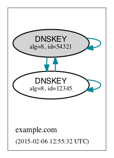 | In some DNSSEC
implementations, multiple DNSKEYs sign the DNSKEY RRset, even though
only a subset are designated to provide secure entry into the zone
(e.g., via matching DS records in the parent zone). While there is
nothing inherently wrong with this configuration, graphically
representing such scenarios can be visually complex because of the
cycles and redundancy created in the graph. |
| 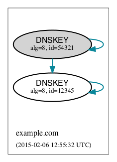 | In order to represent
trust propagation in a simplified fashion, eliminating graphic
redundancies, DNSViz exhibits the following behavior. For
every DNSKEY signing the DNSKEY RRset, a self-directed
edge is added to the node, indicating that the DNSKEY is
self-signing. Additionally, if the DNSKEY is
designated as a (SEP) into the zone, then edges are
drawn from its node to nodes representing all other DNSKEY RRs in the
DNSKEY RRset. If there is no true SEP, (e.g., no DS RRs in the
parent zone), then SEP(s) are inferred based on their signing role
(e.g., signing DNSKEY RRset or other RRsets) and properties (e.g., SEP
bit). |
| 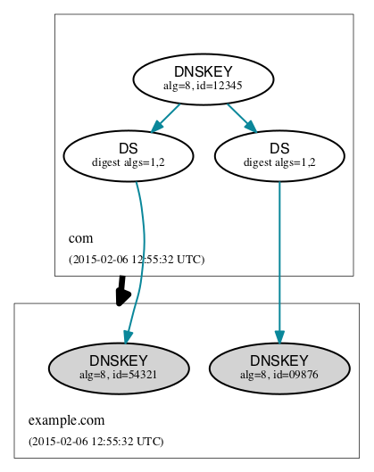 | Like the DNSKEY
RRset, a single DS RRset might be represented as several different
nodes. As such a single RRSIG covering the DS RRset is represented by
edges drawn from the node representing the signing DNSKEY to the nodes
representing every DS RR in the set. In the example at the left,
the example.com/DS RRset is comprised of
both DS nodes shown, and the blue edges going to both of them
collectively represent a single RRSIG corresponding to the key with
algorithm 8 and key tag 12345. |
| 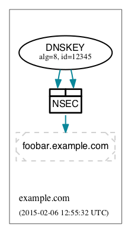 | Because an NSEC or
NSEC3 node represents one or more RRsets and at least one RRSIG per
RRset is anticipated, multiple RRSIG edges will be drawn from DNSKEY
to NSEC or NSEC3 nodes, each pointing to the respective compartment
corresponding to the NSEC or NSEC3 record. |
| 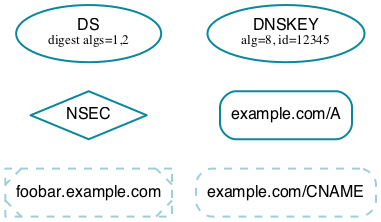 | Beginning at the DNSKEYs designated as
trust anchors, DNSViz traverses the nodes and edges in the graph to
classify each node as having one of three DNSSEC statuses, depending on
the status of the RRset which it represents: secure,
bogus, or insecure. In DNSViz, node
status is indicated by the color of the nodes (Note that there isn't
always a one-to-one mapping between node and RRset, but the node status
will be consistent among all nodes comprising an RRset. An example is
the DNSKEY nodes for a zone, which all have the same status even though
the DNSKEY RRset is split among different nodes). Nodes with blue
outline indicate that they are secure, that there is
an unbroken chain of trust from anchor to RRset. |
| 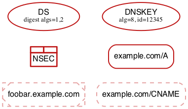 | Nodes with red outline indicate that
they are bogus, that the chain of trust from an anchor
has been broken. |
| Because the NSEC and
NSEC3 nodes often represent multiple NSEC or NSEC3 RRs, it is
possible that a proper subset of the RRs are secure, while others in
the set are not (e.g., missing or expired RRSIG). In this case, the
outline of the compartments representing secure NSEC or NSEC3 RRs
will be colored blue, while the others will be red. Because the
status of the collective set of NSEC and NSEC3 RRs is dependent on
the status of all the individual NSEC and NSEC3 RRs, the greater node
is only colored blue if all the compartments are colored
blue. |
| 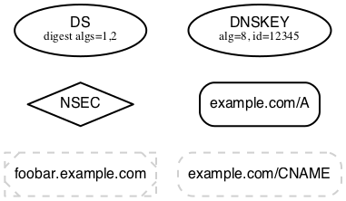 | Nodes with black outline indicate
that they are insecure, that no chain of trust exists;
if any anchors exist then an insecure delegation is demonstrated to
prove that no chain should exist from the anchors. This is equivalent
to DNS without DNSSEC. |
| 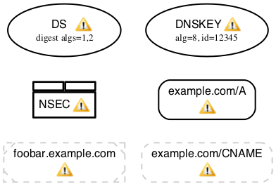 | If one or more warnings are
detected with the data represented by a node in the graph, then a
warning icon is displayed in the node. |
| 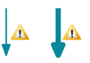 | Similarly, the warning icon is
displayed alongside edges whose represented data has
warnings. |
 | The warning icon is also
displayed within the cluster representing a zone if there are
zone-related warnings. |
| 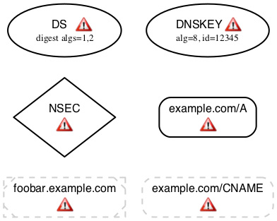 | If one or more errors (more
severe than warnings) are detected with the data represented by a node
in the graph, then an error icon is displayed in the
node. |
| 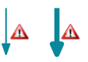 | Similarly, the error icon is
displayed alongside edges whose represented data has
errors. |
 | The error icon is also displayed
within the cluster representing a zone if there are zone-related
errors. |
 | A warning icon with an italicized
label denotes a warning for a response that isn't represented
elsewhere in the graph, such as a referral with the authoritative
answer flag set. |
| 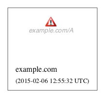 | An error icon with an italicized
label denotes a response error, e.g., due to timeout, malformed response,
or invalid RCODE. |